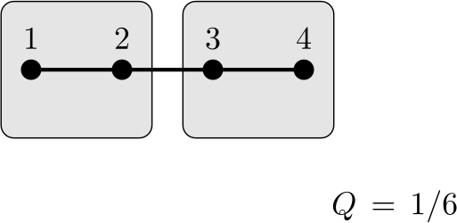

Chapter 7 Modularity
Suppose that we have a network that is partitioned into (potential) communities. The type of a vertex is the community \(C\) that it belongs to. The modularity of a network \(G\) is given by
where
\(A\) is the adjacency matrix
\(m\) is the number of edges in the network
\(k_i\) is the degree of vertex \(i\)
\(C^{(i)}\) is the type of vertex \(i\)
\(\displaystyle \delta(x,y) = \left\{ \begin{array}{cc} 1 & \mbox{if } x=y \\ 0 & \mbox{otherwise} \end{array} \right.\)
The modularity satisfies \(-1 < Q < 1\text{.}\) A modularity score of \(Q > 0.3\) indicates significant community structure.
Exercises Practice Problems
1. Modularity Calculation.
Consider the following network with \(V = \{ 1, 2, 3, 4 \}\) and \(E = \{ (1,2), (3,4) \}\text{.}\) Confirm that the modularity scores of the following four partitions by filling in the summands for \(1 \leq i,j \leq 4\text{.}\) Use this link to a Google Sheet to speed up calculations. Pay attention to the modularity contributions for various pairs of nodes. In particular, when \(i\) and \(j\) are in different communities, the corresponding summand is zero.
A single community.
Solution.
The terms are
\begin{equation*} \begin{array}{c|c|c|c|c} i \backslash j& 1 & 2 & 3 & 4 \\[.5em] \hline 1 & -\frac{1}{4} & 1-\frac{1}{4} &-\frac{1}{4}&-\frac{1}{4}\\[.5em] 2 &1-\frac{1}{4} &-\frac{1}{4} &-\frac{1}{4} &-\frac{1}{4} \\[.5em] 3 &-\frac{1}{4} &-\frac{1}{4} &-\frac{1}{4} &1-\frac{1}{4} \\[.5em] 4 &-\frac{1}{4} &-\frac{1}{4} &1-\frac{1}{4} &-\frac{1}{4} \end{array} \end{equation*}and the modularity is
\begin{equation*} Q = \frac{1}{4} \left( 4 - 16 \cdot \frac{1}{4} \right) =0 \end{equation*}Two communities with no external edges.
Solution.The terms are
\begin{equation*} \begin{array}{c|c|c|c|c} i \backslash j& 1 & 2 & 3 & 4 \\[0.5em] \hline 1 & -\frac{1}{4} & 1-\frac{1}{4} &0&0\\[0.5em] 2 &1-\frac{1}{4} &-\frac{1}{4} &0 &0 \\[0.5em] 3 &0&0 &-\frac{1}{4} &1-\frac{1}{4} \\[0.5em] 4 &0 &0&1-\frac{1}{4} &-\frac{1}{4} \end{array} \end{equation*}and the modularity is
\begin{equation*} Q = \frac{1}{4} \left( 4 - 8 \cdot \frac{1}{4} \right) = \frac{1}{2} \end{equation*}Two communities with no internal edges.
Solution.
The terms are
\begin{equation*} \begin{array}{c|c|c|c|c} i \backslash j& 1 & 2 & 3 & 4 \\[0.5em] \hline 1 & -\frac{1}{4} & 0 &-\frac{1}{4} &0\\[0.5em] 2 &0&-\frac{1}{4} &0 &-\frac{1}{4} \\[0.5em] 3 &-\frac{1}{4} &0 &-\frac{1}{4} &0 \\[0.5em] 4 &0 &-\frac{1}{4} &0 &-\frac{1}{4} \end{array} \end{equation*}and the modularity is
\begin{equation*} Q = \frac{1}{4} \left( 0 - 8 \cdot \frac{1}{4} \right) = -\frac{1}{2} \end{equation*}Two communities of sizes 3 and 1.
Solution.
The terms are
\begin{equation*} \begin{array}{c|c|c|c|c} i \backslash j& 1 & 2 & 3 & 4 \\[0.5em] \hline 1 & -\frac{1}{4} & 1-\frac{1}{4} &-\frac{1}{4}&0\\[0.5em] 2 &1-\frac{1}{4} &-\frac{1}{4} &-\frac{1}{4} &0\\[0.5em] 3 &-\frac{1}{4} &-\frac{1}{4} &-\frac{1}{4} &0 \\[0.5em] 4 &0&0&0 &-\frac{1}{4} \end{array} \end{equation*}and the modularity is
\begin{equation*} Q = \frac{1}{4} \left( 2 - 10 \cdot \frac{1}{4} \right) = -\frac{1}{8} \end{equation*}
2. Modularity Calculation for a Path.
Confirm the modularity scored obtained by splitting the path \(P_4\) into the given communities.
A single community.
Solution.
The terms are
\begin{equation*} \begin{array}{c|c|c|c|c} i \backslash j& 1 & 2 & 3 & 4 \\ \hline 1 & - \frac{1}{6}& 1- \frac{2}{6}&- \frac{2}{6}&- \frac{1}{6}\\[0.5em] 2 &1- \frac{2}{6}&- \frac{4}{6}&1- \frac{4}{6}&- \frac{2}{6}\\[0.5em] 3 &- \frac{2}{6}&1- \frac{4}{6}& - \frac{4}{6}&1- \frac{2}{6}\\[0.5em] 4 &- \frac{1}{6}&- \frac{2}{6}&1- \frac{2}{6}&- \frac{1}{6} \end{array} \end{equation*}and the modularity is
\begin{equation*} Q = \frac{1}{6} \left( 6 - 4 \cdot \frac{1}{6} - 8 \cdot \frac{2}{6} - 4 \cdot \frac{4}{6} \right) = \frac{1}{6} \left( 6 - \frac{18}{3} \right) = 0 \end{equation*}Two communities separated by the most central edge.
Solution.The terms are
\begin{equation*} \begin{array}{c|c|c|c|c} i \backslash j& 1 & 2 & 3 & 4 \\[0.5em] \hline 1 &- \frac{1}{6}& 1 - \frac{2}{6}&0&0\\[0.5em] 2 &1 - \frac{2}{6}&2- \frac{4}{6}&0&0\\[0.5em] 3 &0&0& - \frac{4}{6}& 1- \frac{2}{6}\\[0.5em] 4 &0&0&1 - \frac{2}{6}&- \frac{1}{6} \end{array} \end{equation*}and the modularity is
\begin{equation*} Q = \frac{1}{6} \left( 4 - 2 \cdot \frac{1}{6} - 4 \cdot \frac{2}{6} - 2 \cdot \frac{4}{6} \right) = \frac{1}{6} \end{equation*}
3.
Use this link to a Google Sheet to explore the ways to partition graphs on four vertices. You may add self-loops, but such a loop corresponds to \(A_{ii}=2\) (so that the degrees are correct).
Can you find a graph and a partition with modularity greater than \(1/2\text{?}\) If not, why not? Solution.
Yes, you can. Using loops and communities of size 1 is the key. In fact, a graph with a loop at each vertex that is split into four singleton communities leads to the calculation
\begin{equation*} \begin{array}{c|c|c|c|c} i \backslash j& 1 & 2 & 3 & 4 \\[0.5em] \hline 1 &2 - \frac{1}{2}&0&0&0\\[0.5em] 2 &0&2 - \frac{1}{2} &0&0\\[0.5em] 3 &0&0&2 - \frac{1}{2}&0 \\[0.5em] 4 &0&0&0&2 - \frac{1}{2} \end{array} \end{equation*}so the modularity is
\begin{equation*} Q = \frac{1}{8} \cdot 4 \left(2 - \frac{1}{2} \right) = \frac{3}{4} \end{equation*}Can you find a graph and a partition with modularity less than \(-1/2\text{?}\) If not, why not? Solution.
No, you cannot. In order to maximize modularity, you want all the edges to be external to your communities. So the only question is: how many communities should we have? Here are the results from the possibilities for community sizes. All edges between communities are present.
One community with 4 vertices has \(Q=0\) (or maybe \(Q\) is undefined for the empty graph?)
Two communities: \((3, 1)\) has \(Q = -1/2\)
Two communities: \((2,2)\) has \(Q=-1/2\)
Three communities: \((2,1,1)\) has \(Q= -17/50\)
Four communities: \((1,1,1,1)\) has \(Q=0\)
4. Understanding Modularity, Part I.
Modularity measures the extent to which edges are internal to communities, compared with spanning different communities. We will explain why this is the case. Basically, we are comparing the actual structure of the network with the expected structure of a network where we randomize the edges (but preserve the vertex degrees).
-
Explain why the following expression counts the total number of edges
\begin{equation*} \frac{1}{2} \sum_{i} \sum_{j} A_{ij} \end{equation*}When we sum all of the entries of the adjacency matrix, we count every edge twice.
-
Now explain why the following expression counts the total number of edges that are internal to one of the designated communities.
\begin{equation*} \frac{1}{2} \sum_{i} \sum_{j} A_{ij} \, \delta (C^{(i)}, C^{(j)}) \end{equation*}which can also be written as
\begin{equation*} \frac{1}{2} \sum_{C} \sum_{i \in C} \sum_{j \in C} A_{ij}. \end{equation*}The Kronecker delta function is 1 when \(i,j\) are in the same community and it is 0 otherwise. So we only count internal edges of communities. The sum counts each of these edges twice.
5. Understanding Modularity, Part II.
Now we will randomly rewire the network. We keep the ends of the edges, so that the vertex degrees do not change (see the figure to the right). We erase the edges themselves, which gives us a configuration like the one pictured to the right. Next, we randomly add edges between pairs of vertices, until all edges have been redrawn. Loops are allowed, as are multiple edges between pairs of vertices.
Note that the degree of vertex \(i\) will still be \(k_i\) when this process is done.
Pick the start of one edge at vertex \(i\text{.}\) What is the probability that this rewired edge connects to vertex \(j\text{?}\) Solution.
The probability is really
\begin{equation*} \frac{k_j}{2m-1} \end{equation*}but this is basically the same as
\begin{equation*} \frac{k_j}{2m} \end{equation*}for a very large network.
So how many rewired edges from vertex \(i\) do we expect to connect to vertex \(j\text{?}\) (Assume that the network is so big that the chance that two ends at \(i\) try to connect to the same end at \(j\) is irrelevant.) Solution.
The expected number of such edges is really
\begin{equation*} k_i \frac{k_j}{2m-1} \end{equation*}but this is basically the same as
\begin{equation*} \frac{k_i k_j}{2m} \end{equation*}for a very large network. Essentially, what we are doing is ignoring the probability that we pick the same endpoint twice.
-
Now argue that the expected number of rewired edges that are internal to the specified communities is
\begin{equation*} \frac{1}{2} \sum_{i} \sum_{j} \frac{k_i k_j}{2m} \, \delta (C^{(i)}, C^{(j)}) \end{equation*}which can also be written as
\begin{equation*} \frac{1}{2} \sum_{C} \sum_{i \in C} \sum_{j \in C} \frac{k_i k_j}{2m}. \end{equation*}Here, the \(\frac{1}{2}\) takes care of the double counting since our sum looks at the pair \(i,j\) twice. Solution.
In this case, the Kronecker delta function makes it so that we only count edges within communities.
We subtract the expression in question 4(c) from the expression in question 3(b). We then divide by the total number of edges \(m\) (a normalizing factor) to get the modularity
which can also be written as
6. Modularity as a Random Walk Measure.
We can rewrite our modularity equation as
Confirm that this expression is equivalent to
\begin{equation*} Q \, = \, \sum_{C} \sum_{i,j \in C} \left( P^{\top}_{ij}\pi_i - \pi_i \pi_j \right) \end{equation*}where \(P = D^{-1} A\) is the random walk transition matrix and \(\pi\) is its stationary distribution, where \(\pi_i=k_{i}/2m\text{.}\) Solution.This random walk formula for \(Q\) is equivalent to the right hand side of the previous equation for \(Q\)
-
Consider a random walk whose distribution has converged to the stationary distribution \(\pi\text{.}\)
Explain why \(\sum_{i,j \in C} P^{\top}_{ij}\pi_i\) is the probability that we are in \(C\) at time \(t\) and \(t+1\text{.}\) Solution.
Given vertex \(i \in C\text{,}\) we are at this vertex with probability \(\pi_i\text{.}\) We then step to a neighbor \(j\) with probability \(p_{ij}\text{,}\) and we only include this in our sum when \(j \in C\text{.}\)
Explain why \(\sum_{i,j \in C} \pi_i \pi_j\) is the probability that we are in \(C\) at time \(t\) and \(t+T\) for very large \(T\text{.}\) Solution.
Given vertex \(i \in C\text{,}\) we are at this vertex with probability \(\pi_i\text{.}\) If we walk a large number of steps, then the probability that we are at vertex \(j\) is \(\pi_{j}\text{.}\) We multiply these probabilities to obtain the given probability.
Modularity is the difference of the two quantities in part (b). Using this random walk interpretation, why is this difference a measure of community structure?